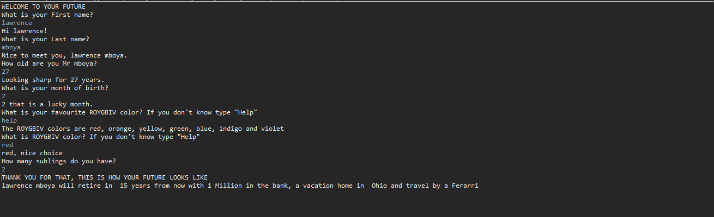

Project: Virtual Pet
worked in a team of 5 to develope a program that represent a pet. User can interact with the pet to give a drink, feed, play or take it to bed.
Skills: TDD, OOP, Java collections (maps, arrays and array lists)
Technology: Java, eclipse, github, and gitbush

Github link
Project: University Clinic Hospital
Worked in a team of 3 to develope a program that maintai all hospital employees and patient. User can add, pay or assign a task to employees and provide care to patient.
Skills: TDD, OOP, Java collections (maps, arrays and array lists)
Technology: Java, eclipse, github, and gitbush
Github link
Project: Furtune Teller
Developed a program that interacts with users and use the input to predict the future.
Skills: TDD, OOP, Java collections (maps, arrays and array lists)
Technology: Java, eclipse, github, and gitbush

Github link